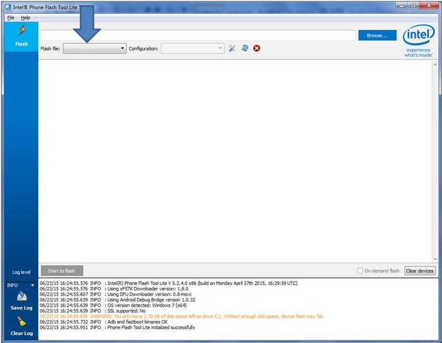

-
Unplug any USB or power cables connected to the Intel® Edison.
-
Get the latest Yocto firmware image for the Intel® Edison.
- On the USB key: downloads → Windows/Mac/Linux → edison_media
- Copy edison-iotdk-image-[version].zip to your computer.
-
Launch the Flash Tool Lite program installed in the previous section.
-
Click Browse in the upper righthand corner. Select edison-iotdk-image-[version].zip file.

The tool extracts the zip file and loads FlashEdison.json.

-
For the “Configuration” drop down, if your host machine is:
- OS X or Linux: choose “CDC”
- Windows: choose “RNDIS”
-
Unplug all cables from the Intel® Edison.
-
Click Start to Flash.

-
When you see the prompt, plug a micro-USB cable into the top micro-USB connector on the expansion board.

You should see the Flash Tool detect the board and begin the flash process.

-
Wait 3-4 minutes for the firmware progress to finish. Do not unplug the board during this time!

Once the flashing is completed, the board will restart and you will see a “Flash success” indicated in the Flash Tool.